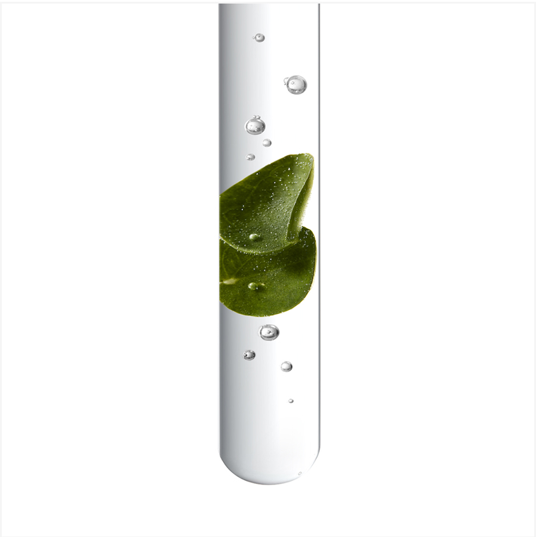
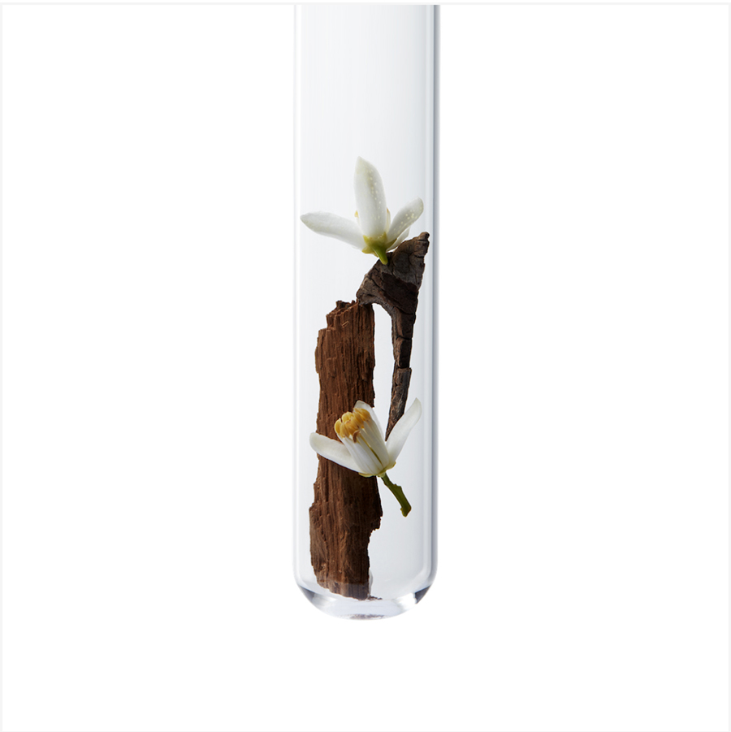

What is your main hair goal ?
{{slide.titleTop}}
{{slide.title}}
{{slide.subtitle}}
{{slide.titleTop}}
{{slide.title}}
{{slide.subtitle}}
{{slide.titleTop}}
{{slide.title}}
{{slide.subtitle}}
CHROMA ABSOLU
Bain Riche Chroma Respect
Color Protecting & Nourishing Shampoo
Free of Silicone, Sulfates and Paraben
Lactic Acid + Centella Asiatica
- Protects Hair color from stripping or fading away
- Transforms fiber surface for immediate softness and less color induced frizz
- 95% more nourishment*
- 65% more brilliant shine**
- Helps reduce fiber porosity for a longer lasting color
- 92% color intensity preserved after 6 weeks***
Main benefits
* Instrumental test: Bain Riche Chroma Respect + Soin Acide Chroma
Gloss + Masque Chroma Filler
** Instrumental test
*** Instrumental test: Bain Riche Chroma Respect + Soin Acide Chroma
Gloss
Diagnosis
Looking for the perfect
routine for your colored
hair?
Pro tips
5 tips to keep your dyed hair healthy by our Kérastase ambassador Hovig Etoyan
To prevent your color from stripping away, use a sulfate free shampoo such as the Bain Riche Chroma Respect or Bain Chroma Respect.
After coloring service, wait 2 days before shampoo. This will give the color plenty of time to set.
Always use a heat protection before blow-dry like the Serum Chroma Thermique that not only protects your hair from Heat damages but also from UV induced damages and humidity.
If you don't have time to treat your hair with a masque every washing day, take some time in the weekend to nourish your colored hair by using Masque Chroma Filler and add a hot towel on top for extra care.
To avoid open cuticles that will lead you to a premature color fading, remember to rinse your hair with cold water and to preserve your color even longer use Soin Acide Chroma Gloss once a week.
How to apply
Don't forget to turn off the water while applying products under the shower !
Apply

Distribute
Add water and develop foam

Rinse
Rinse Bain Riche Chroma Respect thoroughly and repeat.

Before / After *
* Illustration of the contemplated results obtained after applying Chroma Absolu range – results may vary from one individual to another.
Color damage
How does hair color sensitize my hair?
The 3 levels of color damages
Damages at the core
Augmente porosity weakens fiber, letting moisture and color escape.
* Instrumental test on Soin Acide Chroma Gloss + Sérum Chroma Thermique
Damages at the middle
Environmental aggressors like UV damage, heating tools and hard water, accelerate color oxidation and limit shine potential.
* Instrumental test after Bain Chroma Respect
Damages at the surface
Cuticle is rough and dry, triggering color induced frizz.
* Instrumental test after Sérum Chroma Thermique
Watch the performance of our product
Care sets you free
#youdarewecare
What’s inside
Powered by the science of 3 ultra-caring acids:

With Centella Asiatica
Millenary plant
Known for its regenerative and healing properties.
Indulgent sensoriality
Nerolist perfume
72h Intense Fragrance Halo*
A unique new luxurious scent
Top notes
Neroli & Cardamom
Middle notes
Tuberose, Orange Blossom and Freesia
Bottom notes
Sandwood, Musk and Gaiac Wood
*Instrumental test: Bain Riche Chroma Respect + Masque Chroma Filler + Sérum Chroma Thermique
Sustainability
Packaging
Our shampoo bottles* are now made with 95% recycled plastic** and are recyclable
* Excluding the cap
** The remaining 5% are dyes and additives
Factory
Since 2015 our factories achieved carbon neutrality using 100% renewable energy
100% of the water used for production processes is recycled and reused.
In 2020, our factory saved 32 million liters of water.
Our commitment
The range
Find out more about our products
Only in-salon
Fusio Dose

Personalized haircare treatment for instant hair transformation.
A 5-minute hair treatment with 42 possible combinations: 2 hair needs answered in one shot after a thoughtful diagnosis performed by your hairdresser.
Looking for a healthy, protected color? Try our Booster
Resurfaçant and Concentré Acide Aminé.
This powerful caring
combination will make your hair recover from color induced damage
to transform its texture, protect its intensity and boost shine.